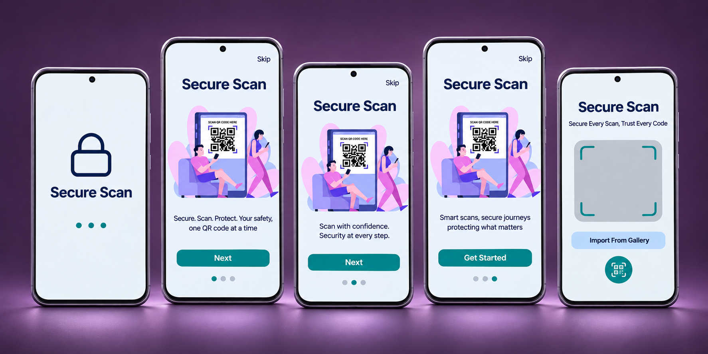
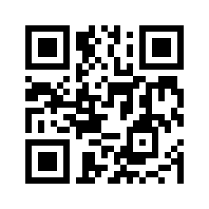

01 / Android app
SecureScan
A native Android QR scanner that reads codes from the camera or an image and identifies whether web links use HTTP or HTTPS.

The project
A closer look.
SecureScan is a native Android app for reading QR codes and understanding one useful detail about a scanned web address: whether it uses HTTPS or unencrypted HTTP. Users can scan with the device camera or choose an image from the gallery, then receive clear feedback in the app.
The app focuses on URL scheme classification—not website reputation. An HTTPS result means the link uses an encrypted connection; it does not guarantee that the destination is safe or trustworthy. SecureScan does not check for phishing or malware and does not open scanned links automatically.
Scan and understand
- Live camera scanning: Uses CameraX to analyze the camera preview and detect barcodes.
- Gallery image scanning: Select an image from the device and process it with the same barcode-scanning flow.
- HTTP and HTTPS results: Parses scanned values as web addresses and classifies supported links by their URL scheme.
- Clear scan feedback: Reports invalid web links, empty scans, processing failures, or denied camera permission.
- Onboarding: An animated launch screen introduces the app, with options to continue or skip.
How it works
Android Activities and XML layouts provide the launch, onboarding, and scan screens. CameraX supplies the live preview and image-analysis frames; Google ML Kit Barcode Scanning decodes barcodes from both camera input and gallery images. A Java URI classifier checks the decoded value and the scanning screen presents the result.
Camera work follows the Activity lifecycle and processes frames on a single-thread executor. The analyzer keeps only the latest frame and guards against overlapping processing, helping avoid a queue of stale frames and repeated scan results.
Built with
- Java
- Android
- CameraX
- Google ML Kit
- XML
- Gradle
The URL classifier has unit tests for HTTPS, HTTP, and invalid or non-web values. SecureScan is a self-contained Android client with no separate backend or database.
Interactive preview
Try SecureScan.
A browser adaptation of the Android app’s QR scanning and link checks. Images stay in your browser; nothing is uploaded.
Secure Scan
One QR code at a time.

Choose a sample or import an image, then scan.
Give it a try
A real QR scan.
No camera required.
Pick a sample and press Scan QR code. The demo reads the pixels in the image and displays its contents.
Download this test QR ↓
HTTPS encrypts a connection; it does not prove a website is safe. This demo does not check for phishing or malware, and never opens scanned links automatically.
Run the Android app
Download the preview build to try SecureScan on an Android device running Android 7.0 or newer. This is a debug build of the native app, not a browser demo.
Download Android APK